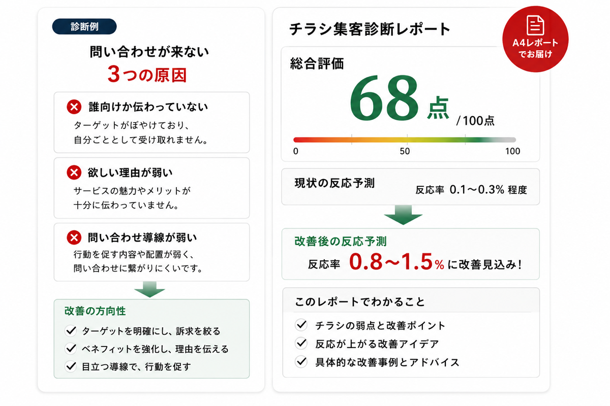
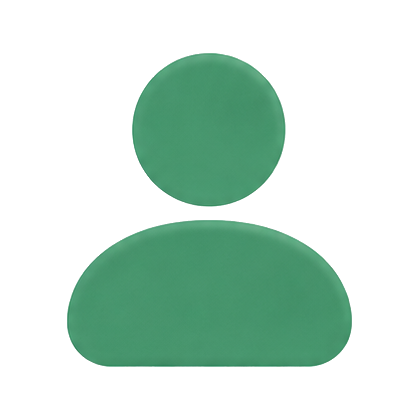
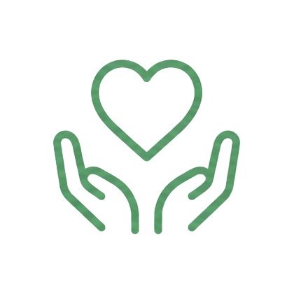
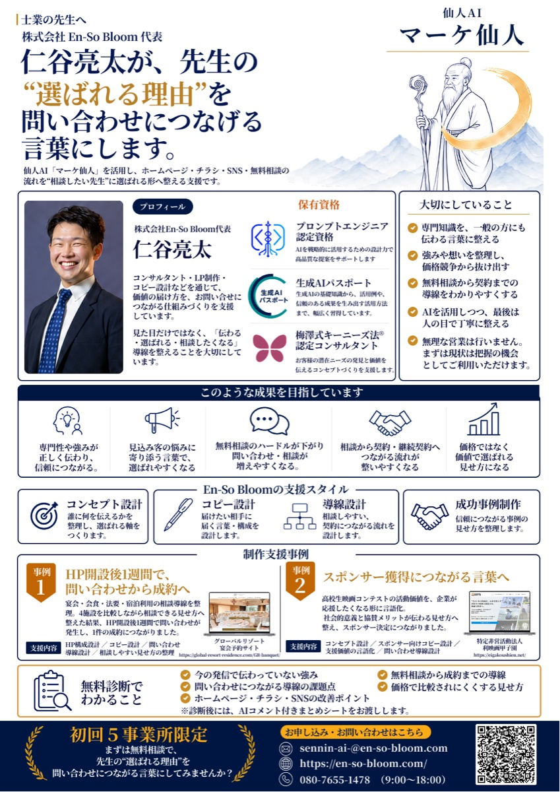
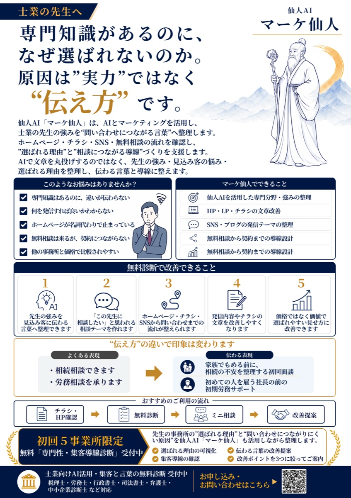
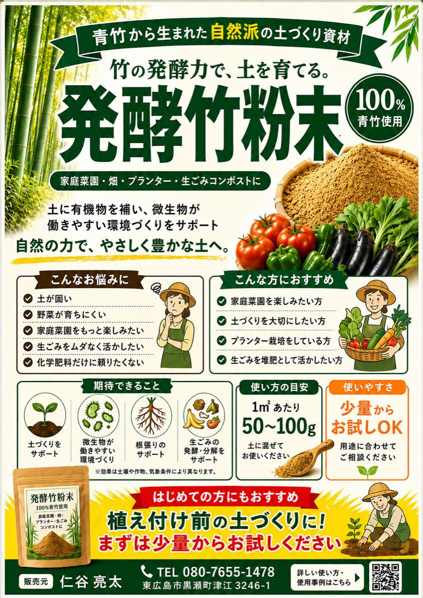
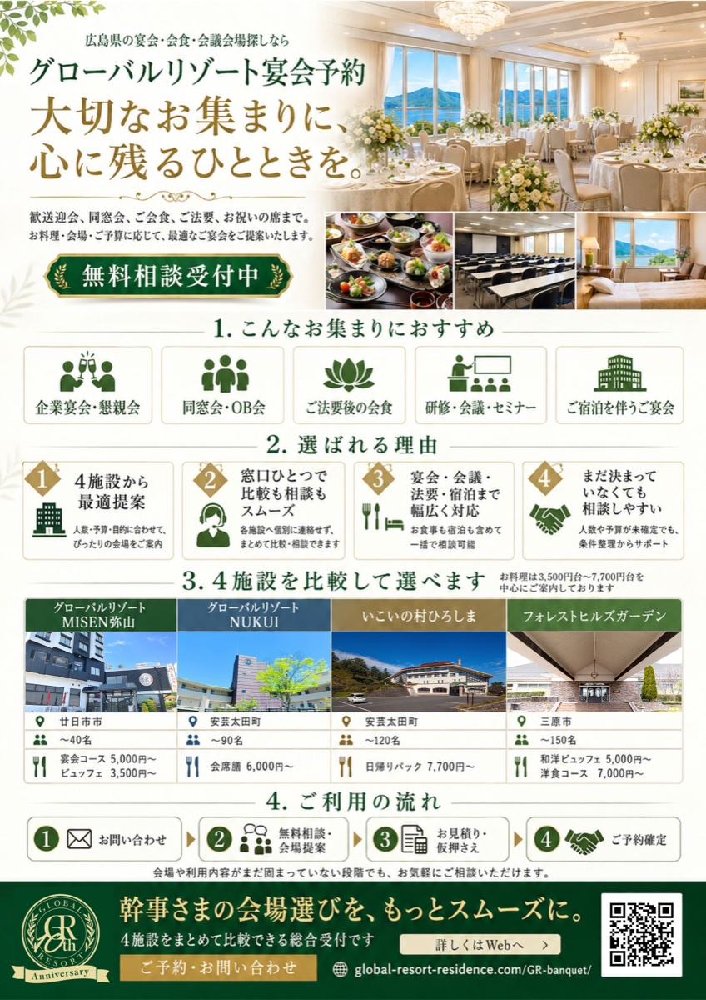
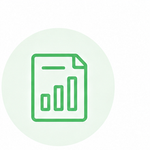
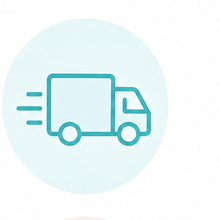

01
誰に向けたチラシなのかが曖昧
「地域の方へ」「お悩みの方へ」だけでは広すぎて、読み手が自分ごとにしにくくなります。
無料 / 診断だけOK / 1〜3営業日で返信
チラシの弱点を無料診断します。
ターゲット・オファー・導線を診断し、 問い合わせや予約につながる改善ポイントを A4レポートでお届けします。
診断レポートで「原因」と「改善策」がわかる！

診断から改善までの流れ
無料診断で見るポイント
!こんなお悩みありませんか？
ひとつでも当てはまるなら、今のチラシにはまだ改善できるポイントがあるかもしれません。
チラシは、ただきれいに作れば反応が出るものではありません。
!反応が出ない原因
読み手が見た瞬間に「これは自分のことだ」「ちょっと気になる」「今、問い合わせてみよう」と思える流れが必要です。
反応が出ないチラシには、よくある原因があります。
「地域の方へ」「お悩みの方へ」だけでは広すぎて、読み手が自分ごとにしにくくなります。
サービス説明ばかりだと、受けた後にどう変わるのかが伝わりにくくなります。
初回特典、無料相談、期限、限定性などがないと、読み手は後回しにしがちです。
電話、Web、LINE、予約の入口が見つけにくいと、興味があっても行動が止まります。
無料チラシ診断とは？
診断料は無料です。診断だけのご利用でも問題ありません。 作り直すべきか分からない、配る前に見てほしい、どこを直せばいいか知りたい。 そんな段階でも大丈夫です。
写真が見やすく、料金とサービス内容は伝わっています。
誰向けか、今申し込む理由、問い合わせ導線を強める余地があります。
肩こり・腰痛でお悩みの方へ
夕方になると肩が重いデスクワーク女性へ
★★★★★ ターゲットの明確化
★★★★☆ キャッチコピー改善
★★★☆☆ 問い合わせ導線の改善
無料診断の受付内容
今のチラシを送っていただき、業種・目的・配布方法・地域・困りごとをもとに、 反応を落としている可能性があるポイントを整理します。
整体院、美容室、飲食店、リフォーム、士業、求人、スクール、キャンペーン告知などに対応します。
表面・裏面がある場合は両方お送りください。スマホで撮影した写真でも診断できます。
新規集客、予約、問い合わせ、求人応募など、チラシで増やしたい反応を伺います。
総合評価、良い点、改善点、優先順位、見出しや訴求の改善案をまとめます。
診断料は無料です。内容を確認し、通常1〜3営業日以内にメールでお送りします。
診断だけで終了しても大丈夫です。反応や売上を保証するものではありません。
新しく作る場合は、業種・目的・ターゲット・掲載したい内容をもとに、方向性の整理から進めます。
なぜ診断できるのか？
見た目を整えるだけのチラシでは、結果は変わりません。反応が落ちる原因を明らかにし、売れる設計から始めます。
見た目を整えるだけで、
反応が落ちる原因に気づけないことも…
原因が分からないまま制作すると、反応は変わりません。
反応が落ちる原因を分解し、
売れる設計からつくります。
原因を特定し、反応が上がるチラシをつくります。
診断によって原因を明らかにし、成果につながるチラシをご提案します。
チラシの反応を落としている原因を、
7つのAI仙人とは、チラシを感覚で作らず、マーケティング視点で改善点を見つける分析フレームです。
「なんとなく見づらい」ではなく、誰に届いていないのか、どこで読む手が止まっているのか、なぜ問い合わせまで進まないのかを分解して見ていきます。
ターゲット、見出し、競合との違い、オファー、問い合わせ導線を分けて確認します。
反応を落としている原因と、先に直すべき改善優先順位を整理します。
改善ポイント、見出し案、訴求の方向性をA4診断レポートにまとめます。
リサーチ仙人
同じ地域・同じ業種のチラシと比べて、見出しや打ち出し方が似すぎていないかを確認します。
レポートでは埋もれにくい打ち出し方や、前面に出すべき強みを整理します。
診断データ例
例：近隣の同業と同じ「安心・丁寧」だけになっている場合、専門性や地域ならではの選ばれる理由を前面に出します。
ターゲ仙人
読み手が見た瞬間に「これは自分のことだ」と思えるか、悩みや生活シーンの具体性を確認します。
レポートでは反応しやすい人物像と、刺さりやすい言葉の方向性を提案します。
診断データ例
対象者を絞るほど、見出し・写真・本文・オファーの選び方が明確になります。
ポジショニング仙人
価格、安心感、専門性、地域密着、実績など、どの立ち位置で選ばれるべきかを見ます。
レポートでは「ここに相談したい」と思われる見せ方を整理します。
診断データ例
どの軸で選ばれるチラシにするかを決めると、競合と差がつく「強みの打ち出し方」と「優先順位」が明確になります。
ベネフィット仙人
「何をしているか」だけでなく、それによってお客様がどう楽になるのか、どう安心できるのかを確認します。
レポートではサービス内容を「欲しい理由」に変える表現案を出します。
診断データ例
丁寧に対応します
初めてでも不安なく相談できる
迷っている方も、まずは無料相談から
「特徴」から「ベネフィット」への変換で、お客様の心が動き、選ばれる理由につながります。
オファー仙人
読み手は「良さそう」と思っても、理由がなければ後回しにします。行動のきっかけがあるかを見ます。
レポートでは後回しにされにくいオファーや見せ方を提案します。
診断データ例

対象条件 自分ごと化しやすい今ある特典が弱い場合は、無料診断・初回相談・先着枠など、無理なく使える切り口を検討します。
訴求仙人
チラシは最初の見出しで読まれるかが決まります。広すぎる言葉や弱い表現になっていないかを見ます。
レポートでは今の見出しの弱点と、改善キャッチコピー案を出します。
診断データ例
肩こり・腰痛でお悩みの方へ
夕方になると肩が重い
デスクワーク女性へ
悩み・ベネフィット・ターゲットを明確にした見出しが、最初の3秒で興味を引きます。
マーケ仙人
情報が並んでいるだけでは行動につながりません。読み手が迷わず問い合わせへ進める順番かを確認します。
レポートでは問い合わせまで迷わず進める構成の改善点を整理します。
診断データ例

選ばれる理由で安心制作実績
見た目を整えるだけでなく、誰に向けて、何を伝え、どこから問い合わせや応募につなげるかまで設計しています。

拡大士業向け / 無料相談導線
先生本人の信頼感、保有資格、支援スタイルを整理し、問い合わせ前の不安を減らす構成にしています。

拡大士業向け / 診断受付
専門知識はあるのに選ばれない先生に向けて、悩みの言語化から無料診断への流れを作っています。

拡大商品紹介 / 園芸資材
「発酵竹粉末」という聞き慣れない商品を、家庭菜園の悩み・使い方・期待できることに分解して伝えています。

拡大宴会予約 / 会場比較
会場・人数・料金・利用シーンを一覧化し、幹事が比較と相談をしやすい紙面にしています。
キャンペーン / 応募促進
高校生の映画制作を応援する企画として、メリット・対象・協力内容・応募導線を分かりやすく整理しています。
改善サンプル
以下は改善イメージのサンプルです。実在企業名やロゴを出さず、業種別に見せ方を整理しています。
肩こり・腰痛でお悩みの方へ
デスクワークで夕方になると肩が重い30〜50代女性へ
悩みを具体化することで、読み手が自分ごとにしやすくなります。
水回りリフォーム承ります
築20年以上の戸建てにお住まいの方へ。古くなったキッチン・お風呂を毎日使いやすい空間へ。
誰のどんな状況に向けたリフォームなのかが分かりやすくなります。
宴会予約受付中
幹事さんへ。料理・席・予算の悩みをまとめて相談できる、地域密着の宴会プラン。
単なる告知ではなく、幹事の不安に寄り添う内容になります。
スタッフ募集
未経験でも、最初の1ヶ月は先輩が横についてサポート。地元で長く働きたい方を募集しています。
条件だけでなく、応募前の不安を減らす言葉を入れています。
制作できるもの
毎月の販促物を、その都度ゼロから悩まずに
作れる状態を目指します。
販促のアイデアからデザイン・印刷まで、まるっとサポートいたします。
ご利用料金
診断だけで終了しても大丈夫です。チラシ・POP・SNS告知などを
継続して作りたい方に、月額プランをご案内します。
販促伴走プラン
月額150,000円〜
何を作ればいいか分からない、毎月の集客施策を一緒に考えてほしい、
導線全体を見直したい。そんな方に向いている上位プランです。
現状の振り返りと
今後の施策を一緒に検討
競合の強み・弱みを分析し、
差別化ポイントを明確化
ターゲットに響く
企画を毎月ご提案
認知から来店・購入までの
導線を設計・改善
チラシ・POP・画像など
月10点まで制作可能
効果的なキャンペーンで
集客を最大化
数値や反応をもとに、継続的に改善をご提案
ご利用の流れ
まずは現在のチラシを
お送りください。
業種、地域、配布方法、
目的、困りごとを
お伺いします。

7つのAI仙人の分析フレームで
改善ポイントを整理します。
診断だけで終了しても
問題ありません。
作りたい内容をチャットで
送るだけです。

修正は1回まで
無料対応します。
シンプルなステップで、スムーズにチラシ制作をサポートします。
?よくある質問
無料診断を受ける前に、よくある疑問や不安を解消します。
はい。現在のチラシを送っていただければ、無料でA4診断レポートをお送りします。
はい。診断だけでも問題ありません。必要な方にのみ、サブスクプランをご案内します。
診断後、ご希望の方にはサブスクプランをご案内します。無理な営業は行いません。
はい。お問い合わせフォームから、会社・個人事業主・店舗のご相談内容を送っていただけます。
無料診断レポートの作成・送付、お問い合わせへの返信、サービス品質の改善に必要な範囲で利用します。詳しくはプライバシーポリシーをご確認ください。
完全自動の診断ではありません。7つのAI仙人の分析フレームを活用し、担当者が内容を確認してレポートにまとめます。
はい。新規制作も可能です。業種・目的・ターゲット・掲載したい内容を伺いながら制作します。
はい。以前から使っているチラシほど、今のターゲットや訴求とズレている可能性があります。
基本はデザインデータ納品です。印刷が必要な場合は、別途ご相談ください。
反応や売上を保証するものではありません。ただし、ターゲット・訴求・オファー・導線を整理し、反応につながる可能性を高める制作を行います。
チラシを作り直す前に
今のチラシを送るだけで、改善ポイントをA4レポートで無料診断します。
診断だけのご利用でも大丈夫です。